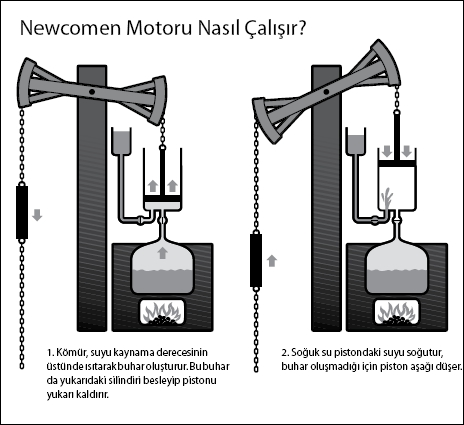

Endüstri Devrimi'nin itici gücü
Adam Hart-Davis, Science (Bilim) gibi kitapların yazarı ve sunucu
Kömür bir hayli pistir, fakat bu "kara elmas" MÖ 300 civarından beri yakıt olarak kullanılır. Ortaçağın sonunda çoğu açık hava madeni tükenmişti ve madenciler talebi karşılamak için giderek daha derine iniyorlardı. Ne yazık ki aşağıya doğru kazdıkça su taşkınına kurban gitme ihtimalleri de artıyordu. Mesela Thomas Newcomen'ı ele alalım.
"Newcomen motoru, etkin buhar motoru ve taşınabilir enerjinin ilk kaynağıdır. Endüstri Devrimi'ni başlatmış ve dünyayı sonsuza dek değiştirmiştir."
Adam Hart-Davis
Bu demirci kalay madenlerinin bulunduğu Dartmouth, Devon'da büyüdü. 1712'de Dudley'deki derin bir kömür madeninde bir "hava motoru" yaptı. Bu motor eskiden derinlerden su çıkarmak için kullanılan, beygir gücüyle çalışan pompaların ve el pompalarının yerini aldı. Motor kömürü yakarak suyu kaynatıyor ve buhar oluşturuyor, buhar da pistonu çalıştırıyordu.

Motor dayanıklı, güvenilir ve öylesine revaçtaydı ki on sekizinci yüzyıl boyunca 1000 tane yapıldı ve Avrupa dışına ihraç edildi. Ancak verimli değildi, çok kömür yakıyordu ve hatırı sayılır miktarda ısıyı heba ediyordu. Ayrıca her birinin yapımı, o zamanlar için küçük bir servet sayılabilecek 1000 pounda mal oluyordu.
İskoç mühendis James Watt, 1764'te bir Newcomen model motoru tamir ederken, onun ne kadar verimsiz olduğunu fark etti. Pistonun her hareketi için bütün silindirin suyun kaynama derecesinin üstünde ısıtılması ve ardından da iyice soğutulması gerekiyordu. Glasgow Green'de yürürken Watt'ın aklına parlak bir fikir geldi. Eğer silindiri sürekli kaynama derecesinin üstünde tutar ve ayrı bir soğutucu çalışırsa motor çok daha verimli olabilirdi.
İşe yarar bir motor yapması Watt'ın on yılını aldı. Neyse ki kendisini destekleyecek Matthew Boulton adında bir girişimci vardı, sonraki 25 yılda bu motor dünyanın tercihi oldu ve Endüstri Devrimi'nin fitilini ateşledi.